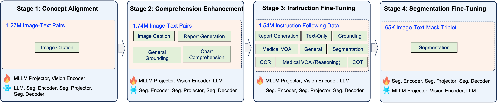

Citrus-V: Advancing Medical Foundation Models with Unified Medical Image Grounding for Clinical Reasoning
Guoxin Wang†, Jun Zhao, Xinyi Liu, Yanbo Liu, Xuyang Cao, Chao Li, Zhuoyun Liu, Qintian Sun, Fangru Zhou, Haoqiang Xing, Zhenhong YangJDH Algo, JD Health International Inc. †Project Lead

Framework. Model architecture of Citrus-V. The framework consists of three components: (1) an MLLM—including the LLM, tokenizer, and a vision encoder—for high-level visual-textual reasoning such as report generation, VQA, and grounding; (2) a segmentation projector that maps the "[SEG]" token produced by the MLLM into latent segmentation prompts; and (3) a segmentation model that decodes the latent segmentation prompts together with semantic image features into pixel-level masks. Separate image encoders are employed to decouple low-level details for segmentation from high-level semantics for other tasks, ensuring both types of tasks are optimized without semantic conflict.
Abstract
Medical imaging provides critical evidence for clinical diagnosis, treatment planning, and surgical decisions, yet most existing imaging models are narrowly focused and require multiple specialized networks, limiting their generalization. Although large-scale language and multimodal models exhibit strong reasoning and multi-task capabilities, real-world clinical applications demand precise visual grounding, multimodal integration, and chain-of-thought reasoning. We introduce Citrus-V, a multimodal medical foundation model that combines image analysis with textual reasoning. The model integrates detection, segmentation, and multimodal chain-of-thought reasoning, enabling pixel-level lesion localization, structured report generation, and physician-like diagnostic inference in a single framework. We propose a novel multimodal training approach and release a curated open-source data suite covering reasoning, detection, segmentation, and document understanding tasks. Evaluations demonstrate that Citrus-V outperforms existing open-source medical models and expert-level imaging systems across multiple benchmarks, delivering a unified pipeline from visual grounding to clinical reasoning and supporting precise lesion quantification, automated reporting, and reliable second opinions.
Contribution
1. Unified Integration of Visual and Reasoning Capabilities: We construct a unified model that integrates detection, segmentation, and multimodal chain-of-thought reasoning, enabling pixel-level lesion localization, structured report generation, and physician-like diagnostic inference within a single model.
2. Comprehensive Open-Source Data Suite: To facilitate reproducibility and support the research community, we release Citrus-V along with a curated open-source data suite, including:
- A multimodal chain-of-thought reasoning dataset for report generation.
- A refined detection and segmentation benchmark with corrected labels.
- A medical document understanding benchmark with graded difficulty levels.
3. Novel Multimodal Training Paradigm: We further design a novel multimodal training paradigm to accelerate convergence and enhance generalization across diverse imaging and reasoning tasks.
Comparison with Other Methods
Ability |
Evaluation |
Open-source model < 10B |
Open-source model > 10B |
Commercial model |
|||||||||||||||
|---|---|---|---|---|---|---|---|---|---|---|---|---|---|---|---|---|---|---|---|
| Task | Sub-Category | MedGemma 4B | Qwen2.5-VL 7B | HuatuoGPT-V 7B | Lingshu 7B | Citrus-V 8B | HealthGPT 14B | MedPLIB 14B | MedGemma 27B | Qwen2.5-VL 32B | Lingshu 32B | Citrus-V 33B | HuatuoGPT-V 34B | Qwen2.5-VL 72B | Citrus-V 73B | Doubao 1.6 | GPT 4.1 | GPT 5 | |
| Medical visual question answering (Med-VQA) | VQA-RAD | - | 72.06 | 66.30 | 67.85 | 68.74 | 64.30 | 64.08 | 45.45 | 63.86 | 72.28 | 75.39 | 77.83 | 63.64 | 79.16 | 81.37 | 33.49 | 62.53 | 68.37 |
| MedXpertQA | MM | 22.05 | 20.75 | 22.30 | 26.90 | 25.10 | 24.55 | - | 33.10 | 25.30 | 31.00 | 29.15 | 22.65 | 28.15 | 37.50 | 45.75 | 43.35 | 51.48 | |
| SLAKE | - | 78.32 | 67.86 | 69.39 | 82.90 | 84.91 | 67.43 | 38.54 | 76.17 | 76.36 | 87.68 | 88.40 | 73.02 | 79.47 | 90.02 | 67.28 | 72.54 | 65.82 | |
| PATH-VQA | - | 48.64 | 42.30 | 44.29 | 60.23 | 62.00 | 58.67 | 40.02 | 47.60 | 41.58 | 64.76 | 63.89 | 44.92 | 42.55 | 64.89 | 47.58 | 54.97 | 31.74 | |
| PMC-VQA | - | 48.02 | 50.86 | 53.84 | 55.77 | 55.64 | 56.90 | 44.40 | 45.35 | 53.58 | 57.23 | 59.74 | 56.79 | 57.11 | 62.04 | 49.94 | 38.76 | 36.10 | |
| Medical text question answering (Med-TQA) | PubMedQA | - | 73.00 | 75.80 | 73.60 | 75.40 | 74.80 | 69.40 | 49.40 | 79.00 | 68.60 | 78.20 | 78.40 | 71.00 | 70.00 | 74.20 | 76.00 | 76.00 | 78.00 |
| MedMCQA | - | 52.26 | 53.40 | 51.95 | 56.13 | 55.10 | 63.33 | 1.63 | 63.23 | 62.71 | 65.05 | 65.62 | 55.08 | 69.57 | 70.83 | 75.06 | 77.07 | 62.99 | |
| MedQA | USMLE | 55.54 | 57.50 | 52.95 | 63.39 | 64.89 | 66.93 | 7.38 | 81.15 | 71.33 | 74.94 | 80.28 | 58.52 | 77.77 | 86.80 | 93.48 | 87.98 | 76.96 | |
| MCMLE | 41.10 | 73.93 | 73.09 | 75.98 | 16.90 | 52.83 | 12.03 | 64.89 | 88.18 | 86.98 | 86.69 | 76.09 | 90.40 | 90.16 | 94.02 | 81.73 | 74.00 | ||
| MedXpertQA | Text | 13.10 | 12.40 | 10.33 | 16.45 | 71.19 | 12.45 | 0.45 | 22.01 | 15.88 | 22.86 | 22.20 | 12.20 | 16.78 | 29.02 | 30.67 | 30.82 | 40.75 | |
| CMMLU | - | 43.96 | 68.80 | 71.12 | 69.02 | 54.22 | 55.36 | 15.53 | 60.24 | 82.60 | 82.37 | 83.27 | 77.64 | 87.47 | 87.47 | 91.67 | 81.02 | 82.93 | |
| Medbullets | op4 | 48.05 | 47.08 | 43.51 | 62.66 | 29.47 | 53.57 | 3.90 | 67.86 | 59.74 | 68.51 | 73.05 | 44.81 | 62.66 | 83.44 | 82.79 | 78.90 | 88.93 | |
| op5 | 42.53 | 36.69 | 37.66 | 52.92 | 76.94 | 50.00 | 1.30 | 65.58 | 50.65 | 63.31 | 66.23 | 39.29 | 56.17 | 74.68 | 76.62 | 73.38 | 87.30 | ||
| SuperGPQA | - | 21.52 | 26.39 | 22.11 | 27.51 | 59.09 | 25.59 | 0.22 | 33.18 | 38.26 | 40.80 | 41.63 | 28.06 | 45.15 | 49.26 | 55.19 | 50.60 | 49.54 | |
| Medical Document Understanding (Med-Doc) | Laboratory test report (hard) | Full extract | 27.61 | 73.23 | 23.10 | 60.06 | 91.21 | 22.22 | - | 26.15 | 71.40 | 63.46 | 90.01 | 22.78 | 74.90 | 92.34 | 80.00 | 66.86 | 69.05 |
| Simple QA | 19.87 | 83.62 | 10.26 | 60.48 | 97.38 | 17.90 | - | 32.97 | 83.41 | 73.36 | 96.29 | 8.52 | 88.21 | 96.07 | 84.72 | 71.40 | 78.60 | ||
| Complex QA | 9.56 | 31.22 | 4.56 | 23.45 | 84.28 | 3.17 | - | 5.50 | 30.54 | 32.38 | 87.99 | 10.88 | 44.11 | 87.91 | 70.90 | 36.66 | 56.78 | ||
| All categories (hard) | Simple QA | 29.75 | 71.92 | 25.17 | 53.92 | 79.75 | 24.67 | - | 29.50 | 73.29 | 61.25 | 83.08 | 22.50 | 74.46 | 81.04 | 81.00 | 53.17 | 82.92 | |
| Complex QA | 25.92 | 70.92 | 14.21 | 52.28 | 78.38 | 16.00 | - | 22.21 | 73.38 | 62.83 | 82.54 | 16.12 | 76.46 | 86.58 | 70.92 | 55.04 | 64.50 | ||
| Medical Image Report Generation (Med-IRG) | CheXpert Plus | ROUGE-L | 26.01 | 22.59 | 21.40 | 26.68 | 28.94 | 21.29 | 0.07 | 17.65 | 17.45 | 25.29 | 29.58 | 23.97 | 20.06 | 29.4 | 22.67 | 24.50 | 31.72 |
| CIDEr | 85.86 | 61.72 | 65.00 | 76.49 | 95.47 | 68.24 | 0.04 | 48.08 | 52.48 | 77.42 | 108.66 | 66.07 | 57.31 | 105.97 | 92.72 | 78.80 | 131.44 | ||
| RaTE | 51.23 | 43.79 | 46.58 | 46.93 | 51.07 | 47.82 | 21.05 | 48.73 | 46.70 | 46.18 | 52.45 | 45.51 | 44.76 | 52.01 | 53.76 | 45.50 | 56.64 | ||
| Medical image detection and segmentation (Med-IDAS) | MeCOVQA-G (segmentation) | DER | - | - | - | - | 92.09 | - | 79.84 | - | - | - | - | - | - | - | - | - | - |
| CT | - | - | - | - | 64.04 | - | 57.58 | - | - | - | - | - | - | - | - | - | - | ||
| PET | - | - | - | - | 77.93 | - | 64.25 | - | - | - | - | - | - | - | - | - | - | ||
| X-RAY | - | - | - | - | 14.69 | - | 8.47 | - | - | - | - | - | - | - | - | - | - | ||
| END | - | - | - | - | 92.80 | - | 44.35 | - | - | - | - | - | - | - | - | - | - | ||
| MR | - | - | - | - | 43.07 | - | 27.38 | - | - | - | - | - | - | - | - | - | - | ||
| US | - | - | - | - | 83.83 | - | 34.22 | - | - | - | - | - | - | - | - | - | - | ||
| FP | - | - | - | - | 74.07 | - | 4.82 | - | - | - | - | - | - | - | - | - | - | ||
| MedSAM2 (eval) | - | - | 20.90 | - | - | 44.60 | - | - | - | - | - | - | - | - | - | - | - | - | |
Model Access
Model |
Size |
Ability |
Download |
|---|---|---|---|
Citrus-V |
8B |
Med-VQA, Med-TQA, Med-Doc, Med-IRG and Multimodal Chain-of-Thought Reasoning (MM-CoT). |
|
33B |
Med-VQA, Med-TQA, Med-Doc, and MM-CoT. |
||
73B |
Med-VQA, Med-TQA, Med-Doc, and MM-CoT. |
Dataset Access
Dataset |
Usage |
Description |
Download |
|---|---|---|---|
MeCoVQA-G-Plus |
Benchmark |
MeCOVQA-G+ is mainly used to evaluate the medical image modality segmentation capability of medical multimodal language models, and it is built on the basis of the open-source dataset MeCOVQA-G through methods such as expert modification and review. |
|
MedXray-CoT |
Train Data |
The MedXray-CoT dataset is primarily used to train large medical multimodal models to develop the ability, similar to that of physicians, to reason based on different anatomical structure regions under the X-ray modality. |
|
MedDocBench |
Benchmark |
MedDocBench examines the model's capability to perform in-depth parsing of information such as text, tables, and charts within real-world medical documents (e.g., lab reports, prescription slips) and accurately extract key medical knowledge. |
Training Strategy

Concept Alignment: In this stage, most model parameters are frozen, and only the MLLM projector together with the vision encoder are updated. Training primarily relies on image-caption pairs, which establish a stable mapping from visual features into the language space without disrupting the pretrained reasoning ability of the LLM. This step provides a lightweight but essential initialization for subsequent multimodal alignment.
Comprehension Enhancement: All MLLM parameters, including the projector, vision encoder, and LLM, are trainable, while the segmentation projector, encoder, and decoder remain frozen. Training incorporates a broader range of tasks, reporting detailed and structured, interpreting of medical image are preserved to establish correlations between visual features, medical concept, radiological findings and imaging diagnostic. Additionally, scientific document comprehension data such as chart, diagram, are taken considering that explication and interpretation of scientific illustrations and graphs is necessary facing with clinical documentation, laboratory reports, diagnostic image annotations and radiographic markers. This stage strengthens the MLLM’s multimodal comprehension capacity, while freezing the segmentation modules prevents premature interference from segmentation supervision.
Instruction Fine-Tuning: In the instruction fine-tuning stage, the MLLM is trained on the most diverse instruction-following data, including report generation, text-only instructions, OCR, grounding, medical VQA, reasoning-based chain-of-thought tasks, and segmentation instructions. It is worth noting that our empirical results show that directly combining segmentation loss with other tasks can damage VQA performance significantly. To this end, all MLLM parameters and segmentation modules are updated, while the gradient of segmentation modules is scaled by 0.001 with a hook function. In this way, for segmentation samples, the supervision is restricted to textual outputs containing the special "[SEG]" token, and applying a small mask-level loss. This design allows the MLLM to acquire the discourse patterns needed for segmentation queries and encode segmentation intent into the hidden state of the "[SEG]" token without losing other tasks' performance.
Segmentation Fine-tuning: At this stage, all MLLM parameters are frozen, and optimization focuses exclusively on segmentation components, including the segmentation projector, the segmentation encoder, and the segmentation decoder. Unlike prior methods that freeze most of the segmentation backbone, the full SAM2 architecture, including the vision encoder, prompt encoder, and mask decoder, is fine-tuned to adapt effectively to medical imaging. With the MLLM frozen, training is computationally efficient, while full adaptation of SAM2 ensures precise and domain-specific pixel-level segmentation.
Case Study
Acknowledgement
We would like to thank the contributors to the ms-swift, SA2VA, SAM2, Qwen2.5-VL, and mmdetection repositories, for their open research and extraordinary work.
BibTeX
If you find our work helpful, please consider citing us:
@misc{wang2025citrusvadvancingmedicalfoundation,
title={Citrus-V: Advancing Medical Foundation Models with Unified Medical Image Grounding for Clinical Reasoning},
author={Guoxin Wang and Jun Zhao and Xinyi Liu and Yanbo Liu and Xuyang Cao and Chao Li and Zhuoyun Liu and Qintian Sun and Fangru Zhou and Haoqiang Xing and Zhenhong Yang},
year={2025},
eprint={2509.19090},
archivePrefix={arXiv},
primaryClass={cs.CV},
url={https://arxiv.org/abs/2509.19090},
}